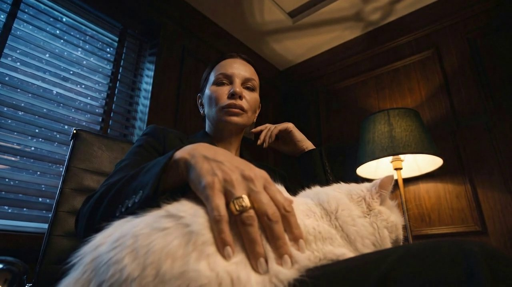
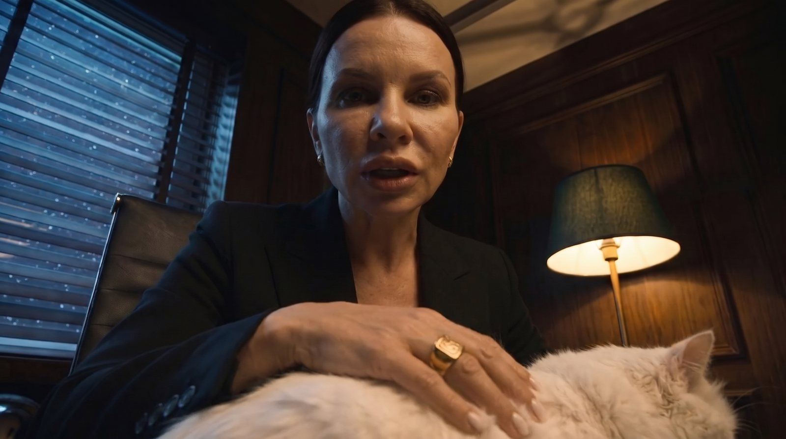
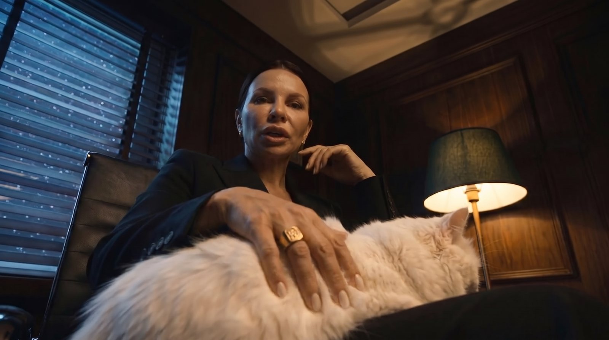
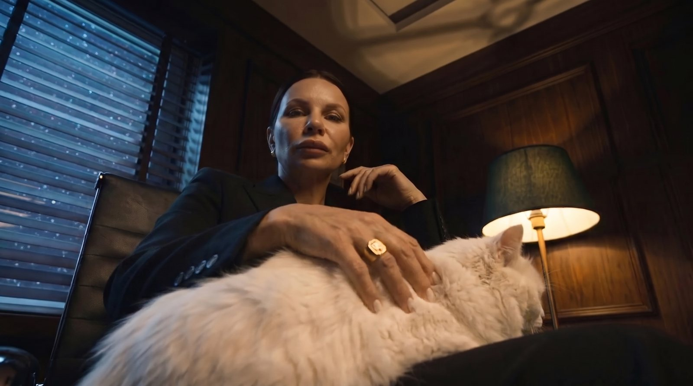
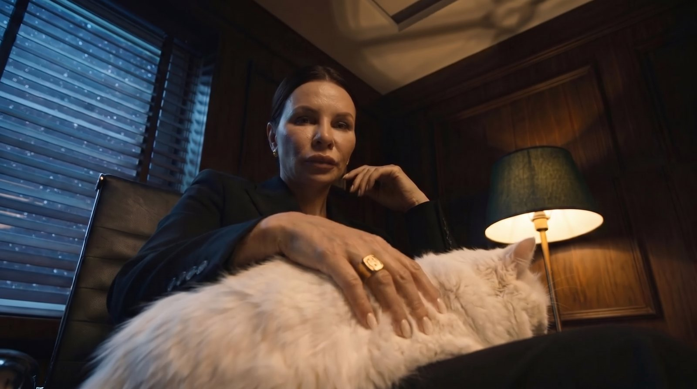

«Без уважения»: плавный переход
Клип начинается ровно с последнего кадра прошлой сцены (Настя снизу). Камера плавно поднимается и подъезжает к ней. Клип кончается одним из 4 кадров ниже.
Начало: конец прошлой сцены

Конец: выбери 1 из 4



